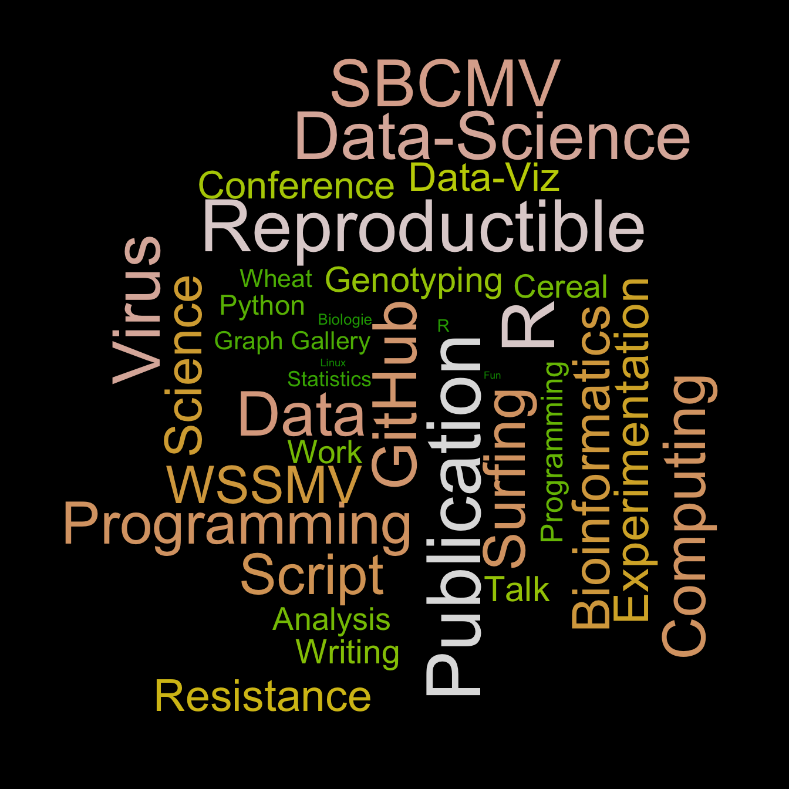

Related chart types

Barplot

Spider / Radar

Wordcloud

Parallel

Lollipop

Circular Barplot
A wordcloud is a visual representation of text data. Learn how to build a basic wordcloud with R and the wordcloud library, with reproducible code provided.
Wordclouds can be very useful to highlight the main topics in text.
In R, it can be built using the wordcloud package as described below.
Note: the wordcloud2 package allows more customizations and is extensively described here.
Note: this online tool is a good non-programming alternative.

#Charge the wordcloud library
library(wordcloud)
#Create a list of words (Random words concerning my work)
a <- c("Cereal","WSSMV","SBCMV","Experimentation","Talk","Conference","Writing",
"Publication","Analysis","Bioinformatics","Science","Statistics","Data",
"Programming","Wheat","Virus","Genotyping","Work","Fun","Surfing","R", "R",
"Data-Viz","Python","Linux","Programming","Graph Gallery","Biologie", "Resistance",
"Computing","Data-Science","Reproductible","GitHub","Script")
#I give a frequency to each word of this list
b <- sample(seq(0,1,0.01) , length(a) , replace=TRUE)
#The package will automatically make the wordcloud ! (I add a black background)
par(bg="black")
wordcloud(a , b , col=terrain.colors(length(a) , alpha=0.9) , rot.per=0.3 )Related chart types